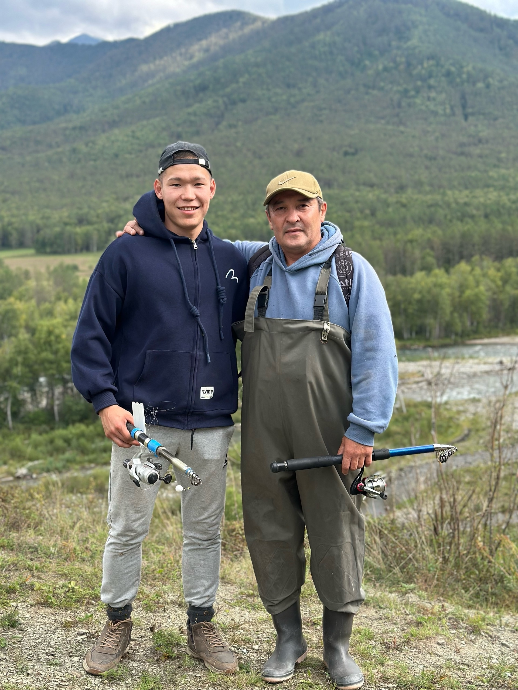

Обо мне
Привет! Меня зовут Аржан, и я ваш гид по удивительному Алтаю. Я родился и вырос здесь, среди этих гор, озёр и бескрайних долин — и безмерно влюблён в родные места. Каждый уголок Алтая для меня как живой рассказ, полный легенд и чудес.
Я знаю тропы, которые не отмечены на картах, тихие озёра, где вода прозрачна до самого дна, и смотровые площадки, откуда дух захватывает от красоты. Моя цель — не просто показать вам достопримечательности, а помочь почувствовать душу Алтая, услышать его голос и унести частичку этой магии с собой.
Готов поделиться своим опытом, теплом и любовью к этим местам — чтобы и вы полюбили Алтай так же сильно, как я!